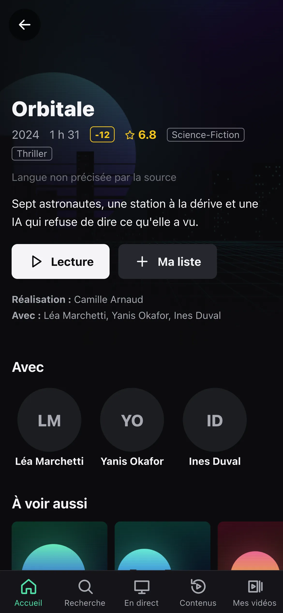

Xtream & M3U
分块读取片库、备用服务器、增量同步：只重写有变化的行。
v2.0.0 · 支持 Android 和 Android TV
Cyberstream 播放你的 Xtream 和 M3U 源：直播频道、电视节目单、电影、剧集和回看。同一个 WebAssembly 模块运行在手机、电视、电脑和浏览器上。
使用演示源和 TMDB 元数据录制。
// 01 — 功能
分块读取片库、备用服务器、增量同步：只重写有变化的行。
虚拟化的“频道 × 时间”网格，按天浏览，支持 gzip 和时区。已播节目可回看。
由 TMDB 丰富的详情页：演员、合集、年龄分级、季和集、继续观看和下一集。
30 至 60 分钟本地缓冲：HLS 流可暂停、±10 秒、回到直播，并自动切换到备用流。
“切换到 5 频道”“搜索沙丘”“后退 30 秒”。在设备上识别，支持界面的全部 14 种语言。
用手机扫描电视上的二维码：个人资料、源和设置自动传来，无需用遥控器输入网址。
内置 ARTE、france.tv 和 Okoo，以及 YouTube RSS 订阅。公共频道优先使用官方流。
SRT、WebVTT 和 OpenSubtitles 哈希搜索。Trakt 观看记录、待看列表和首页推荐。
多个个人资料，各自有语言、头像和年龄限制。服务令牌保存在设备的安全存储中。
// 02 — 界面

// 手机
在手机上，标签栏移到底部，内容行可用手指滑动，播放器支持画中画。同一个 APK 可安装在手机上，也会出现在 Android TV 启动器中。



// 03 — 引擎
// 04 — 安装
Cyberstream-x.y.z.apk。adb 安装到电视上：adb -d install -r Cyberstream-1.0.1.apk最低 Android 7（API 24），且 WebView 需支持 WebAssembly。之后应用会自行在 GitHub 上检查新版本。
带 WebAssembly 目标的稳定版 Rust、Node.js 22.12 或更高版本以及 npm。
rustup target add wasm32-unknown-unknown
cargo install --locked wasm-bindgen-cli --version 0.2.108
npm ci
cargo test --locked && npm test
npm run dev -- --host 127.0.0.1开发时，在设置中选择演示源，无需订阅即可试用。
桌面版使用 Electron。可在本地运行，或构建 macOS、Windows 和 Linux 安装包：
npm run desktop
npm run desktop:dist